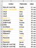
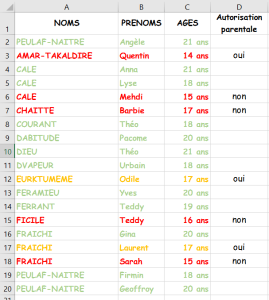
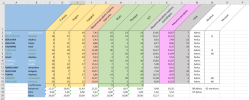

La mise en forme conditionnelle
Vous pouvez surveiller les résultats de certaines formules ou d'autres valeurs de cellules en appliquant des mises en forme conditionnelle. Vous pouvez, par exemple, appliquer une couleur de texte bleue à la cellule si les ventes réalisées dépassent les prévisions et un ombrage rouge dans le cas contraire.
Méthode : Utiliser la mise formule conditionnelle
Méthode : Les formules et la mise en forme conditionnelle
Méthode : Gérer les mises en forme conditionnelle
Simulation :
Pour mettre en jaune le nom et le prénom des élèves mineurs contenu dans cette feuille [xls]:
Il faut :
Sélectionner les cellules de A2:A20 ;
[Format[mise en forme conditionnelle]] ;
Condition1 la formule est =$C3<=18 ;
Dans format sélectionner couleur jaune.
Attention : Utilisation de la mise en forme sur un ensemble de cellules
La formule est définie pour la cellule sélectionnée, normalement la première cellule qui a été sélectionnée avant d'étendre cette sélection ;
La formule est copiée dans les autres cellules en respectant les règles sur les références relatives et absolues.
Simulation :
Ajoutons maintenant une colonne autorisation parentale. Par exemple, pour mettre en vert le nom des élèves de plus de 18 ans, en orange le nom des élèves de moins de 18 ans mais 16 ans et plus avec une autorisation, et en rouge les autres, il faut :
Sélectionner la cellules de A3 ;
[Edition[atteindre[Format conditionnel]]] ;
[Format[mise en forme conditionnelle]] ;
Cliquer sur le bouton [ajouter] ;
Condition 2 la formule est =ET(C3>=16;C3<18;D3="oui") ;
Dans [format] sélectionner couleur orange sur motifs gris ;
Cliquer sur le bouton [ajouter] ;
Condition 3 la formule est =OU(C3<16;ET(C3>=16;C3<18;D3="non")) ;
Dans [format] sélectionner couleur rouge sur motifs gris.
Simulation : Tableau des notes avec mise en forme conditionnelle
Calcul des moyennes des élèves :
Reprendre la solution contenant le classeur des notes (Exercice "Calcul de la moyenne des élèves" de la partie références relatives et absolues) ou télécharger le fichier brut [xls] et modifier le tableau en respectant les consignes suivantes:
Ajouter les colonnes résultat et mention;
Compter le nombre de candidats admis et refusés;
Compter le nombre de mentions;
Les noms et prénoms des étudiants admis avec mention sont en vert ;
Les noms et prénoms des étudiants admis sont en blanc ;
Les noms et prénoms des étudiants refusés sont barrés.
Objectif :